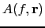
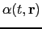
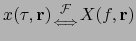
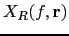
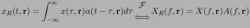
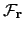
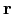

Next: Linear Apertures Theory Up: Introduction to Acoustic Array Previous: Acoustic Signal Propagation Contents
In order to describe the effect of the signal when received by a microphone array, the theory behind transmission/reception of propagating waves needs to be reviewed. An aperture is defined as a spacial region designed to emit (active) or receive (passive) propagating waves. The concept of aperture is very broad and is used for many different kinds of waves.
As can be seen in figure 2.2, a passive aperture has a particular spacial orientation in space and therefore alters the receiving signal in a different way for each frequency and location. In this context the aperture function or sensitivity function ( , with impulsive response ) is defined as such response of the aperture to the incoming signal , resulting on  as
|  | (2.26) |
The aperture function is defined for a particular direction of arrival. In order to measure and characterize the response of an aperture for all directions, the directivity pattern (or beam pattern) is defined as the aperture response to each frequency and direction of arrival. It is given by:
where  is the 3D fourier transform,  now indicates a point along the aperture and is the direction vector of the wave